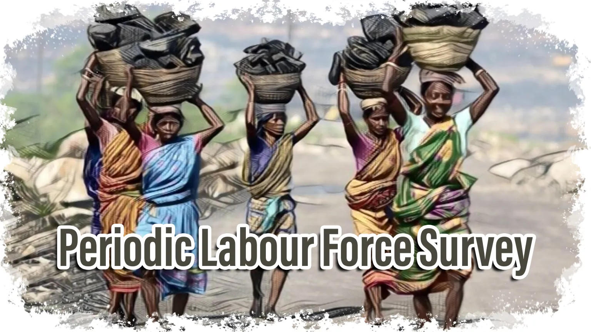

During my internship at the National Statistical Office in Ranchi, I conducted a comprehensive analysis of labor force participation, employment trends, and unemployment rates from 2017-18 to 2020-21. My work focused on identifying key changes and trends in both rural and urban areas, with a particular emphasis on gender-specific impacts.
Key Achievements:
- Increased female labor force participation by 9.5% in rural areas and 2.7% in urban areas.
- Overall Worker Population Ratio (WPR) rose from 51.7% to 54.9%.
- Reduced rural male unemployment by 1.9% and female unemployment by 1.7%.
- Urban male unemployment decreased by 1% and female unemployment by 2.2%.
Impact:
This analysis provided critical insights into labor market dynamics, highlighting significant improvements in employment and participation rates, especially among women in both rural and urban areas. The findings have been instrumental in informing policy decisions aimed at further reducing unemployment and improving workforce inclusion.
Skills Utilized:
- Data analysis and statistical interpretation
- Research and report writing
- Understanding of labor economics and gender studies
This project demonstrates my ability to conduct detailed statistical analyses and present findings that can drive impactful policy changes.